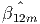
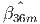
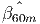

Figure 1: Observations by sampling station: January 1995 to December 2013
Abstract
This paper couples data concerning 2500 grants given to local watershed management
councils by an Oregon state agency, the Oregon Watershed Enhancement Board (OWEB), with
20 years of monthly water quality data sampled at 141 sites around the state. I examine
whether public input, in the form of grant funding, to nonprofit watershed councils impacts
water quality, and further compare the impacts of different grant types, such as restoration
projects or stakeholder outreach. These data present some of the first evidence regarding the
effect of collaborative management outputs on environmental outcomes (Carr et al. 2012;
Koontz and Thomas 2006). In modeling these effects, this paper also makes a methodological
contribution by demonstrating how spatio-temporal ecological and epidemiological
modeling techniques can be used to test policy theory and analyze policy impacts using
extant data. Specifically, I use integrated nested Laplace approximation (INLA) (Rue
et al. 2009) and stochastic partial differential equations (SPDE) (Lindgren et al.
2011) to fit a hierarchical Bayesian model that accounts for spatial and temporal
dependency. I find that increased public support (in the form of OWEB grant funds) for
nonprofit watershed council education and outreach actions are strongly linked to water
quality improvements. Support for council administrative purposes and scientific
or technical activities are also associated with improved water quality over longer
timer periods. The impacts of restoration projects are positive on average but more
uncertain.
Keywords: Watersheds, collaborative management, non-profits, R-INLA, Bayesian hierarchical modeling
Governments increasingly rely on collaborative relationships with non-profit organizations to implement policies or provide services (Salamon 2002). Collaborative management with local nonprofit groups gives governments a community-based vehicle through which to implement policies and programs, and provide nonprofits with access to funding and other resources (Nikolic and Koontz 2008). Management arrangements of this form are very common in environmental applications, particularly watershed management and water quality (e.g., Leach et al. 2013; Leach et al. 2002; Margerum 2011; Hardy and Koontz 2008). This paper builds on the considerable body of research discussing the role that governments play in–and resultant impacts of–supporting collaborative management (e.g., Nikolic and Koontz 2008; Lubell and Fulton 2008; Ansell and Gash 2008; Emerson et al. 2012; Scott and Thomas 2014) by asking a relatively simple question that proves highly elusive in practice: How does government support for collaborative management affect environmental outcomes? To examine this question, I use publically available water quality monitoring data to explore the impact of 2500 grants given by a state agency, the Oregon Watershed Enhancement Board (OWEB), to local non-profit stakeholder councils engaged in ongoing watershed planning and management activities in watersheds across Oregon over the course of almost 20 years.
To model these effects I use Bayesian hierarchical modeling, specifically Integrated Nested Laplace Approximation (INLA) (Rue et al. 2009) for estimating complex hierarchical models and Stochastic Partial Differential Equations (SPDE) (Lindgren et al. 2011) for modeling spatial and temporal dependency, in order to account for the complex spatio-temporal nature of these data. This paper makes a methodological contribution to the policy literature by helping to establish the use of these methods for policy evaluation. The INLA approach facilitates large-scale hierarchical models and complex specifications that account for irregular data and spatial and temporal relationships. This enables the use of publicly available, observational environmental data and helps address some of the analytical challenges that have prevented researchers from linking collaborative management efforts to environmental outcomes in the past (Koontz and Thomas 2006; Thomas and Koontz 2011).
Using this model, I address two primary research questions: (1) Does government funding for collaborative watershed management groups have a measurable impact on water quality? and (2) How does this impact compare across different types of funded programs? Specifically, how does the predicted effect on water quality of funding collaborative group activities that have a direct environmental output (e.g., riparian revegetation) compare to supporting production of indirect outputs (e.g., supporting council administrative activities, which in turn shape future environmental outputs)? In what follows, I first describe the theoretical rationale for this research, and then provide background concerning the case analyzed. I then specify my analytical approach and introduce the INLA and SPDE methods. The remaining sections present the data and model results, and discuss the implications of these findings.
The idea that policy implementation does not solely involve autonomous actions by public agencies is long-established (e.g., Ostrom et al. 1961) and ubiquitous in modern policymaking (Salamon 2002, p. 8). In fact, it is unclear in practice what an alternative to the general concept of collaboration (Donahue and Zeckhauser 2011; Agranoff and McGuire 2003), in which government agencies communicate, consult, coordinate, or cooperate with other public, private, and nonprofit entities, would even be. A stricter definition of collaborative management, which involves government initiation and/or funding (Ansell and Gash 2008) for efforts in which a group of autonomous stakeholders deliberates to build consensus and develop networks (Margerum 2011, p. 6) in order to make or implement public policy or manage public programs or assets (Ansell and Gash 2008, p. 544), raises a more interesting issue: collaboration by this definition does not just happen, but rather policymakers choose collaborative management as a means through which to design and implement policies (Layzer 2008; Hoornbeek et al. 2012; Koontz et al. 2004). Does using funding nonprofit collaborative stakeholder groups result in improved environmental outcomes? For instance, is it more beneficial for the state of Oregon to implement a restoration project directly or to provide grant funds to a local nonprofit watershed council to implement the restoration project instead?
While collaborative management is heavily documented in the policy and management literatures (Emerson et al. 2012; Margerum 2011; Sabatier et al. 2005; Ansell and Gash 2008; Lubell 2004), the complexity of social-environmental systems makes it difficult to trace how government support for non-profit collaborative groups ultimately impacts environmental outcomes (Koontz and Thomas 2006; Thomas and Koontz 2011). Clearly, the context of a particular locale or project greatly determines the answer to this question. More broadly, however, the literature concerning collaborative management provides a theoretical basis to help understand the rationale for governments to partner with nonprofit collaborative groups. The general rationale for supporting collaborative management, such as by funding a nonprofit collaborative management group, is that collaborative efforts yield more holistic and comprehensive management. For instance, collaborative management is shown to enhance cooperation amongst stakeholders (Lubell 2004), alter existing stakeholder beliefs (Leach et al. 2013), increase information exchange and learning amongst actors (Beierle 2002; Weible et al. 2009), foster trust and collective action (Lubell 2005), and incorporate a broader range of information (Innes and Booher 1999; Wondolleck and Yaffee 2000). Local nonprofit collaborative groups can be flexible and responsiveness, pivoting to meet local needs and concerns (Nikolic and Koontz 2008).
On the other hand, since collaborative management is deliberative and consensus-oriented (Ansell and Gash 2008), it can involve a great deal of time and effort (Margerum 2011). Further, in contrast with direct government action in which the implementing agency has stricter control over policy efforts (Salamon 2002), policy implementation via collaborative management has a heightened degree of uncertainty from the perspective of the funding agency since the involvement of more actors creates issues of accountability and control (Weber 2003). There is also concern that government support for local collaborative management efforts can detract from the ability of these local organizations to operate with responsiveness and flexibility, reducing the very qualities that are presumed to make such groups effective (Smith 2004; Nikolic and Koontz 2008).
Nonetheless, the use of collaborative management continues to proliferate (Ansell and Gash 2008; Emerson et al. 2012) as a response to complex environmental problems (Margerum 2011). Among the practical rationales for public managers to choose collaborative management are the expectations that collaborative management will facilitate a more comprehensive understanding of policy problems (Leach et al. 2013), alleviate conflict between stakeholders (Berardo et al. 2014), reduce interorganizational transaction costs (Emerson et al. 2012; Scott and Thomas 2014), and foster greater buy-in from stakeholders (Ansell and Gash 2008). In short, policymakers believe that collaborative management will improve the design and implementation of policies and programs and thereby improve policy outcomes.
Nonprofit watershed councils in the state of Oregon have proved to be a fruitful object of study for those interested in collaborative management (Griffin 1999; Dakins et al. 2005; Margerum 2002, 2007, 2008; Margerum 2011; Habron 2003; Margerum and Whitall 2004; Hibbard and Lurie 2006; Lurie and Hibbard 2008). My study differs significantly from the cited works in that none of these analyses evaluate the impact that these councils have on water quality on a long-term, statewide basis (most involve intensive case studies that focus on specific watersheds). Created by the state legislature in 1995, OWEB provides guidance, administrative support, and resources to 87 local watershed councils. This support includes grants to local watershed councils for myriad purposes ranging from environmental assessment to hiring a full-time coordinator. Because grants are awarded by OWEB on a competitive basis, these data are not suitable for providing a generalizable estimate of how funding collaborative management in a randomly selected watershed improves water quality. This is because the grant application and approval process is intended to identify and select motivated parties and favorable circumstances, which results in selection bias at the watershed level of analysis. However, what is really of interest in this case is the efficacy of Oregon’s statewide support of a collaborative watershed management system. The case that I consider is the state of Oregons ongoing financial support for collaborative watershed management. In other words, the purpose of this analysis is to evaluate the statewide OWEB watershed management strategy (of providing public funds to nonprofit management councils) by modeling whether providing funds to watershed councils corresponds to improved water quality. It is difficult to envision a state or regional program not administered on similar grounds (with funds strategically allocated), and thus this analysis thus provides a good conception of the effectiveness of a grant-funded collaborative watershed management system implemented at a regional governance level.
The OWEB statewide, grant-based system also provides a unique way to address one of the challenges typically faced in estimating the impact of collaborative groups: even if budget data are available, it is difficult to determine the activities and relative effort level of each group. OWEB grant funds provide a consistent approximation of collaborative management effort taking place in given place and time in the state. Rather than simply comparing collaborative and non-collaborative watersheds, grant funding provides a continuous metric of collaborative management that can be used to estimate how increased support for collaborative management relates to environmental outcomes. If collaborative watershed management has an impact on water quality, greater support (as measured by grant funding in this case) should result in a larger impact:
Building upon this basic hypothesis, I then distinguish between grants that more directly target water quality through environmental restoration projects and grants that indirectly target water quality by funding: (1) assessment, monitoring, and other technical actions; (2) educational and outreach programs; and (3) council activities and personnel. Program logic (Bickman 1987), the narrative for how a given program will work to address an identified problem (Margerum 2011; McLaughlin and Jordan 1999), differs greatly for these different types of grants, particularly between restoration projects and the three non-restoration project types. In a simplistic sense, restoration projects can be viewed as a direct purchase of environmental outputs; Typical restoration projects implemented by watershed groups include abatement or prevention of nonpoint or point pollution sources, in-stream flow modifications or water allocation, stream channel restoration, and changes in land-use designations (Leach et al. 2002). These outputs directly contribute to water quality by altering physical conditions. While the extent to which these outputs will alter environmental outcomes might be uncertain, the program logic is fairly straightforward.
Conversely, grant types, including for assessment and monitoring, education and outreach, and council administrative actions, might best be characterized as an investment: Instead of directly purchasing environmental outputs, the program logic of supporting non-restorative actions is essentially that investing in council efforts that produce non-environmental outputs will ultimately engender a return in environmental outputs–and thus outcomes–over time. Much of the collaborative management literature implicitly revolves around this idea. Monitoring and assessment projects, for instance, provide data and information that managers can use for adaptive policymaking (Huntington 2000; Leach et al. 2002; Yaffee et al. 1996). The program logic for investing in monitoring and assessment is that investing in better information will facilitate improved management practices and decision-making, which will thereby result in improved outcomes.
Similarly, outreach projects seek to build community support for environmental efforts in a watershed (Huntington 2000) and educational projects seek to foster agreement on how to improve a watershed (when internal to the council) (Leach et al. 2002) or to promote environmentally responsible behaviors (when external to the council) (Nikolic and Koontz 2008). Education and outreach program logic is that such programs foster learning that alters stakeholder beliefs and practices (e.g., Leach et al. 2013; Leach et al. 2002) or build community support and motivation (Huntington 2000; Emerson et al. 2012), serving to change environmental behaviors or improve implementation efforts and in turn improving environmental outcomes. For instance, Lubell and Fulton (2008) demonstrate that increased exposure to policy networks, such as might be fostered through an outreach project, increases the probability that landowners will adopt environmental practices.1
Finally, council support grants fund group coordinators and group administrative functions. In other words, these types of grants support the existence and operation of the nonprofit watershed council itself. Collaborative management is theorized to engender principled engagement amongst participants that fosters shared motivation, which in turn enables joint actions which could not be accomplished separately (Emerson et al. 2012). Adequate support is shown to be critical to for collaborative efforts to be successful in this regard (Lubell et al. 2009). In particular, there are significant transaction costs associated with initiating and maintaining inter-organizational endeavors, and government provision of staffing, infrastructure, and other resources are shown facilitate such efforts (Schneider et al. 2003). Emerson et al. (2012) theorize that collaborative actions are likely to be implemented only to the extent to which the three collaborative dynamics (principled engagement, shared motivation, and capacity for joint action) function. Thus, to put a fine point on a broad and nuanced literature, the program logic for investing in council support is that a well-functioning collaborative group will result in policy and program outputs that draw on more relevant perspectives (Ansell and Gash 2008; O‘Leary et al. 2006; Leach 2006), have increased commitment from participants (Bryson et al. 2006; Ansell and Gash 2008), and could not be produced separately (Emerson et al. 2012), and that these improved outputs will result in improved environmental outcomes.
As with any investment, the program logic for each type of grant speaks to a tradeoff of risk and reward. For instance, education projects are affordable and easy to carry out (Leach et al. 2002), but have a much more uncertain causal link to environmental outcomes than do projects that produce direct environmental outputs. If a project does not alter stakeholder behavior, or if the impacts of stakeholder behaviors are relatively minor in the grand scheme of things, then it will not change environmental outcomes at all. However, if a project is successful in changing consequential stakeholder behaviors or helps the community agree on necessary improvement steps, then it might result in large changes in environmental outcomes at the cost of producing relatively inexpensive outputs. Similarly, a relatively minor investment in improving processes and policies via collaborative approaches might result in considerable impact. With the exception of certain economies of scale, such as that achieved by improving habitat connectivity, OWEB essentially gets only us much restoration as it pays for; other nonprofit watershed council activities can potentially produce more environmental outputs in excess of the original expenditure.
However, as mentioned previously the literature also emphasizes the time-consuming nature of collaborative management (e.g., Margerum 2011; Ansell and Gash 2008; Imperial 2005) and expresses skepticism about possible achievements of deliberative, consensus-based policymaking (Coglianese 2003; Gunton 2003). In any case, since we do not know a great deal about the relationship between collaborative management outputs and environmental outcomes generally (Carr et al. 2012; Koontz and Thomas 2006; Newig and Fritsch 2009), I pose a conservative hypothesis that assumes that restoration grants, which have the most direct theoretical causal link between outputs and policy outcomes (e.g., revegetation that directly alters streamside riparian areas, which has an effect on water quality), will produce measurable water quality changes and grants for other purposes (with non-environmental outputs) such as education, outreach, administrative support, and technical support will not:
In accordance with these hypotheses, the goal of this paper is to estimate the effect of grants given to watershed councils on water quality. Water quality index observations (Y itj) occur at location i in time period t within stratum (HUC8 watershed in this case) j. Standard regression models are inappropriate in this application, since it is expected that two observations near to each other in spatial location or time, or within the same administrative boundary (e.g., under the purview of a given watershed council) are more similar than two randomly selected observations (and thus exhibit residual dependency, i.e., correlated residuals). These data are thus highly similar to many epidemiological data contexts, as there is an outcome (water quality) and a risk factor or confounder (grant funded projects) and where the spatial (sample sites in the state of Oregon) and temporal (monthly observations) structure of the data must be accounted for in order to make valid inferences. Accordingly, I use a suite of Bayesian hierarchical modeling methods found primarily in the epidemiological (Cameletti et al. 2013; Blangiardo et al. 2010, 2013), spatial econometrics (Bivand et al. 2008, 2013; Gomez-Rubio et al. 2014), and ecological modeling (Cosandey-Godin et al. 2014; Clark 2005; Clark and Gelfand 2006; Wikle 2003; Cressie et al. 2009; Wikle and Hooten 2010; Xu and Wikle 2007; Cressie and Wikle 2011) literatures.
A Bayesian model derives a statistical result (the posterior distribution) via an inferential process that combines the prior distribution (what was assumed prior to observing additional data) with the current data model (Bernardo and Smith 2009). For this application, there are two primary advantages of the Bayesian approach. First, since a posterior parameter distribution is estimated by the model, it is easy to obtain the posterior probability that the parameter does or does not exceed a given value (Blangiardo et al. 2013); this is easier to interpret than p-values used in frequentist statistics. Second, Bayesian methods greatly ease the use of hierarchical model structures, which use random effects to model variance at multiple levels of a model. The Bayesian model I use includes random effects that model spatial and temporal dependence amongst observations. Bayesian methods are shown to be highly effective for analyzing data with this type of spatio-temporal structure (Dunson 2001).
Hierarchical Bayesian models are typically fit using Markov chain Monte Carlo (MCMC) algorithms which use a simulation-based approach to model the posterior parameter distributions (Brooks et al. 2011; Robert and Casella 2004; LeSage and Pace 2010). Since these methods rely on a very large number of simulations applied to complex model structures, MCMC methods are greatly time- and computationally-intensive (Blangiardo et al. 2013). In lieu of MCMC, I use a more computationally efficient method, Integrated Nested Laplace Approximation (INLA), developed by Rue et al. (2009) and widely employed for Bayesian hierarchical modeling (Beguin et al. 2012; Martino et al. 2011; Martino and Rue 2010; Lindgren et al. 2011; Cosandey-Godin et al. 2014).
Given that INLA is relatively new and has as-of-yet limited penetration into the policy literature, along with describing the model specification used in this paper I also provide background on the INLA estimation method more generally. A full description of the INLA methodology is beyond the scope of this paper; Rue et al. (2014) and Lindgren and Rue (2013) provide excellent technical background. Based on the specifications of Cameletti et al. (2013)and Cosandey-Godin et al. (2014) for a spatio-temporal point-reference model, water quality observations in a given watershed at a specific time and location are linked to a structured additive predictor η that is defined linearly as:
|
| (1) |
where βm is the coefficient associated with site covariate m for observation i (including elevation and distance from coast); f(.) represents the semi-parametric function used to model the spatio-temporal random effect (described in more detail below); τt[i] = (t1,...,tT ) represents a smoothed linear trend (a generalized additive model [GAM] term) accounting for long term water quality trajectory; ζt[i] = (t1,...,tT ) is a seasonal component with periodicity (p = 12) to account for expected seasonal variation in water quality in Oregon, particularly between low-flow (June to September) and high-flow (October to May) months (Cude 2001); and αh[i] is the random intercept estimated for observation i in a given HUC8 watershed h. The advantage of fitting a random group effect as opposed to a fixed effect is twofold. First, the random effect accounts for differing within-group sample sizes by placing more emphasis on the group mean when there are many observations in the group and drawing more broadly from the population mean when there are very few observations in the group (Gelman 2006; Gelman et al. 2013). This helps ensure that predicted differences between watersheds are not simply a product of small within-watershed sample sizes by attenuating the group-level estimates for watersheds with fewer water quality samples towards the overall mean (producing more conservative group-level estimates than would a basic fixed-effect approach). Second, and of particular importance for this analysis, is that the random group effect can itself be modeled as a function of group-level covariates. This includes important water quality control variables, such as the percentage of land in the watershed that is developed (e.g., paved or contains buildings) and that is used for agricultural purposes. It also includes grant funding, the variable(s) of interest. Since grants are given to watershed councils, it makes the most sense to aggregate funding at the watershed level. The HUC8-specific adjustment is thus itself modeled as:
|
| (2) |
where α0 is the population average and γw represents a vector of coefficients corresponding to watershed-level variables 1 to W for an observation (i) in a given watershed (h).
The way INLA facilitates Bayesian inference on model parameters is by assuming that these model parameters collectively constitute a latent field, θ = {αj,βm,f,ζt,τt}. This latent field is in turn assumed to be a defined by a Gaussian multivariate distribution of mean 0 and precision matrix Q(ψ), such that θ ~ N(0,Q-1(ψ) (Blangiardo et al. 2013; Rue and Held 2005; Rue et al. 2009; Cosandey-Godin et al. 2014). Using this model, an individual observation y(si,t) (at location s and time t) is modeled by a subset of θ according to its spatio-temporal characteristics:
|
| (3) |
In Equation 3, the observation matrix Aij is where the SPDE method enters in. In order to account for spatial dependence amongst water quality observations, this model includes a random spatial effect known as a Gaussian random field (GRF) (Cosandey-Godin et al. 2014). Modeling a continuous spatial process obviously poses a significant, and largely intractable, computational challenge. The SPDE method posed by Lindgren et al. (2011) indexes the continuous GRF as a discrete random process, or a Gaussian Markov random field (GMRF) (Lindgren and Rue 2013), by dividing the spatial domain (the state of Oregon in this case) into a mesh of triangles (Blangiardo et al. 2013). Essentially, this triangular grid is used to approximate the continuous field. The observation matrix A contains the values of the spatio-temporal random field at the specific times and locations contained in the dataset and uses these values for parameter estimation (Cosandey-Godin et al. 2014). Since values are only stored for specific points (triangle vertices in the mesh) (points within a triangle can be estimated by extrapolating between values at neighboring vertices), this provides considerable computational savings. The latent field is thus linked to model likelihood via A, such that η* = Aη (Cosandey-Godin et al. 2014):
|
| (4) |
Further details regarding INLA and SPDE methods are provided in the context of the analysis presented below. First, I describe the data used in this model.
The dependent variable of interest, a water quality index score, is obtained from the Oregon Department of Environmental Quality (ODEQ). The Oregon Water Quality Index (OWQI) is a multimetric index that integrates eight water quality variables (temperature, dissolved oxygen, biochemical oxygen demand, pH, total nitrogen, total phosphorus, total solids, and fecal coliform) into one comprehensive metric (Cude 2001). For each of these eight subindices, the analytical measurement is converted into a quality rating between 10 (worst case) and 100 (ideal); ODEQ then uses a harmonic square mean formula:
|
| (5) |
where SIs refers to subindex s in subindices 1 to S (e.g., pH level), to compute the OWQI score. In this method, the most impaired variable imparts the greatest influence on overall index score (Cude 2001), which thus provides a holistic measure of general water quality (since a site cannot have a relatively high overall score if it performs poorly on any metric). It is important to note that the OWQI is best suited as a comparative metric; not only is the index calibrated specifically for streams in the state of Oregon, but it does not reflect the suitability of water for specific uses (e.g., fishing or swimming). It does, however, provide an excellent synopsis of overall water quality that allows for comparison of observations from across the state over time. In particular, the OWQI is designed to facilitate comparisons between watersheds, and thus sub-indices such as pH and total solids are adjusted to account for geologic variability (Cude 2001).
OWQI scores are observed on an intermittent monthly basis from 1990 to 2013 at 141 monitoring stations. Generally, in the data obtained from ODEQ index scores are tabulated every other month. For instance, some stations have observations in June and August while others have observations in July and September. In a few cases, however, there are only three or four total monthly observations in total at a given site. One major empirical advantage of the INLA hierarchical model and the random effects approach I use is that it can readily handle this type of irregular data. Thus, there is no need to drop any data or to impute data for undersampled sites or unsampled months. In total, there are 16,676 unique observations. Figure 1 shows how many observations are included for each of the 141 sample sites; each dot represents a given month between January 1995 and December 2013.
The independent variables of interest are obtained from the Oregon Watershed Enhancement Board (OWEB). The grant database received from OWEB contains record of all grant projects funded by OWEB, including location (watershed), project start and end dates, project type, and funding amount; this analysis specifically considers 2509 grants given to watershed councils throughout the state between 1997 and 2013. Table 1 summarizes the nature of these grants:
| N | Avg. Amount ($) | Avg. Length (months) | |
| Monitoring/Assessment/Tech. Assistance | 579 | 41972.26 | 24.79 |
| Council Support | 372 | 104154.25 | 26.37 |
| Education/Outreach | 159 | 23515.76 | 17.24 |
| Restoration | 1384 | 69498.97 | 24.91 |
| All Grants | 2494 | 65345.99 | 24.61 |
While in some cases, a grant is targeted at a specific site (as is often the case for restoration grants), many OWEB grants have a more disparate spatial focus. For instance, an outreach project might be targeted at an entire watershed or basin. To model the spatial focus of grants, grants are aggregated by HUC8 for each month (228 months in total from 1995 to 2013). The total value of a grant is divided by the length of the project in months to calculate a monthly value of each grant; for instance, a $60,000 grant project started in March, 2001 and ending in May, 2001 results in a value of $20,000 for each of March, April, and May. While it is unlikely that grant funds are expended uniformly in practice, the true model of fund distribution is unclear from these data. The temporal distribution of funds also likely varies greatly between projects in any case. Assuming uniform monthly expenditure across the life of the project provides a consistent approach that is simple to interpret. This method also provides a consistent treatment of projects ongoing as of December, 2013, allocating funds in proportion to the portion of the project timeline that has already passed.
Measuring the impact of grants given to watershed councils poses several significant issues. The effects of a grant do not necessarily correspond directly to the actual project period. For instance, a restoration grant used to restore streamside riparian areas should have an ongoing impact on stream turbidity by reducing erosion for years after the project is finished. An OWEB education or outreach grant likewise is expected to have an ongoing impact on stakeholder behavior in the watershed. Of course, in the absence of ongoing maintenance efforts, the effect of restoration or outreach actions likely dissipate or diminish over time. In other words, recording the cumulative total of all grant funding is also inappropriate. To accommodate both the potential for effects that last beyond the actual project duration and for effects that diminish over time, I specify grant funding (for each category of grant) as a rolling sum of active funds for three different time periods: one year, three years, and five years.2 For instance, for the five-year metric, active grant funds in a given watershed in January 2005 are the sum of all monthly grant funds in that watershed between January 2000 and January 2005. The three different specifications are compared below in the model results.
One of the advantages of the spatio-temporal model is that accounting for temporal and spatial relationships between observations serves to address many of the factors that affect water quality. For instance, more or less rainfall than is typical in a given year might affect water quality scores by increasing or reducing water levels; grouping observations by time accounts for this sort of variation. Likewise, the HUC8 random effects describe above account for local characteristics that differ across watersheds, such as management institutions or population. Several additional covariates are included in the model, however, in order to address factors that are not accounted for by controlling for the relative location of an observation in space and time.
First, the western portion of Oregon in between the Pacific Ocean and the Cascade Mountains receives much more rainfall than does the eastern portion and has a much different climate. The distance between a given sample site and the coast makes a considerable difference for observations. Thus, the model includes a variable measuring the Euclidean distance between the sample site and the Oregon coast (mapped using geodata obtained from the Oregon Geospatial Data Library).
Further, land use and land cover are well established as key drivers of water quality (Tong and Chen 2002; Meador and Goldstein 2003). Agricultural land usage is linked to increased water chemical content (Skaggs et al. 1994; Johnes and Heathwaite 1997). Waterways near developed land also demonstrate higher pollution levels (Wang 2001) (e.g., cars that leak oil onto pavement, which then washes into streams). To calculate the proportion of each HUC8 watershed that this used for agricultural purpose or that is developed, I use 30-meter by 30-meter raster (pixel image) data from the National Land Cover Database (NLCD). The NLCD includes national land cover data for 1992, 2001, 2006, and 2011. Using ArcGIS, I first produce a binary True/False raster for each land cover type (agricultural land [cropland or pasture], wetlands,3 forest, and developed land), where each 30-meter by 30-meter pixel is coded as a 1 if that pixel in the comprehensive NLCD raster corresponds to the designated land cover type, and a 0 otherwise. I then use the sp (Pebesma and Bivand 2014) and raster (Hijmans 2014) packages in R to calculate the mean pixel value of all pixels within a 1000-meter radius surrounding each sample site for each land cover type. The buffer zone land cover values calculated using the 1992 NLCD are then matched to water quality observations from 1995-2001, the 2001 NLCD data to water quality observations from 2002 to 2005, the 2006 NLCD data to water quality observations from 2006 to 2010, and the 2011 NLCD data to water quality observations from 2010 to 2013. While it would be ideal to have more fine-grained land cover data, perhaps on a yearly or quarterly basis, the NLCD data in this case satisfy the purpose at hand; the absolute values are less important than having a consistent way to account for relative differences in land usage amongst watersheds. I also use elevation data obtained from the CGIAR Consortium for Spatial Information using the R raster package (Hijmans 2014) to control for the elevation of the sample site.
Before presenting results specifically pertaining to my hypotheses, I describe how I fit these data into the Bayesian hierarchical model and identify the best-fitting specification. All models are estimated using R (R Core Team, 2013) and the INLA package developed by Rue et al. (2009). As described above, Bayesian models estimation posterior parameter distributions; this implies that each parameter also has a prior distribution. Since there are no prior data in this case, prior estimates are specified vaguely using the default recommended INLA settings (Rue et al. 2009) and are said to be non-informative priors (Gelman et al. 2013). This means that posterior estimates are almost wholly generated in light of the data (i.e., the priors have little effect on the posterior estimates). The spatial mesh used for the SPDE approach is shown in Figure 2:
Water quality sampling stations can be used, but do not need to be, as triangle vertices in the mesh (Lindgren et al. 2011). The mesh is more finely grained in areas where there are more water quality sampling stations; larger triangles represent areas with little or no information (Cosandey-Godin et al. 2014). Essentially, this serves so that the model estimates the field with increased accuracy where there are sufficient data, and conversely does not attempt to model the spatial random effect with great detail where there are no data. This model feature is important, since as Figure 2 demonstrates, there are no water quality sampling stations in much of eastern Oregon (in large part due to the fact that there are much fewer streams in the eastern portion of the state) while sample sites are highly concentrated in western Oregon. Figure 2 also shows that the mesh is extended beyond the boundaries of the sample area; this is done to avoid boundary effects wherein there is increased variance at the borders of a spatial field (since locations near the field border have fewer surrounding values) (Lindgren and Rue 2013).
There are several possible methods by which to model spatio-temporal correlation posed by Cosandey-Godin et al. (2014) that I compare: (Model 0) no spatial correlation; (Model 1) spatial correlation that is constant over time; (Model 2) spatial correlation that has a different realization for each year; (Model 3) spatial correlation that is itself correlated in consecutive years; (Model 4) spatial correlation that is repeated amongst years, so that the correlation between 2000 and 2001 is the same as that between 2000 and 2007; (Model 5) spatial correlation that has a different realization for each month; (Model 6) spatial correlation in which consecutive months in the same year are correlated; and (Model 7) spatial correlation that is repeated amongst months in a given year, so that the correlation between March 2007 and April 2007 is the same as that between March 2007 and September 2007). Table 2 presents the results associated with each of these models, as well as a model without an SPDE component, fit without the grant funding data. I select the optimal spatio-temporal model structure based upon Deviance Information Criterion (DIC) scores, which are a version of the traditional Akaike Information Criterion (AIC) score adapted to better suite hierarchical Bayesian models (speigelhalter2002; Ward 2008). As with AIC (and Bayesian Information Criterion [BIC]) scores, lower DIC scores indicate a better-fitting model:
| M0 | M1 | M2 | M3 | M4 | M5 | M6 | M7 | |
| DIC score: | 2, 765 | 2, 048 | 2, 227 | -23 | 50 | 2, 068 | 1, 637 | 1, 686 |
As Table 2 demonstrates, Model 3 has the smallest DIC value by far, indicating that it provides the optimal method for modeling spatial correlation over time. Model three fits a separate spatial correlation for each year (1995 through 2013), but assumes that the spatial correlation between consecutive years is itself correlated. Relative to the some of the other specifications, this makes a great deal of intuitive sense. First, spatial correlation refers to the underlying spatial process assumed to present; while conditions at different sites might vary considerably, the role that spatial distance plays in these conditions likely remains relatively constant. Thus, it makes sense to model all months in a given year as having the same spatial correlation function. Depending on broader ecological, economic, or political changes, however, one might also expect to see the role of spatial relationships change at least somewhat over 20 year period, as is included in this analysis. Assuming that consecutive years are correlated (i.e., spatial correlation in one year is very much like that of the following year), but allowing spatial correlation to change over time accounts for such long-term, incremental changes. As discussed above, the model also includes terms to capture temporal trends and seasonal fluctuation. Figure 3 shows the smoothed time trend and seasonal trend fitted as part of Model 3. It is interesting to note that overall, water quality appears to fluctuate between 1995 and 2013 but there is no discernible upward or downward trend.
Having identified the spatio-temporal correlation structure that best fits these data, I now proceed to fit grant funding into the model. First, I model the effect of all grant funds, regardless of type, computed using rolling 1-year, 3-year, and 5-year sums (e.g., where the 3-year sum represents the total grant funds provided in a given watershed for the 36 months prior to the water quality observation). I use the 1-year interval because water quality is typically considered in terms of a 12-month “water year,” and the 3-year and 5-year intervals to potentially capture project impacts realized on a more long term basis. While as mentioned above there are few data that explicitly concern the effects of collaborative managmenet on water quality, Lubell et al. (2009, p. 281) note that the perceived effectiveness of collaborative efforts increases with time (see also Leach et al. 2002; Leach 2006)
Table 3 shows the results of each of these three models. Since the dependent variable, the Oregon WQI score, is log-transformed, each coefficient from the model is interpreted as log(OWQI) = α + βx, so that a one unit increase in x increases log(OWQI) by β. An easier way to interpret these coefficients then is to exponentiate each coefficient so that it can be interpreted directly in terms of OWQI score where OWQI increases by a factor of exp β. This multiplicative effect is how terms in Table 3 are presented; a coefficient greater than one indicates an increase in OWQI score, and a coefficient less than one indicates a decrease in OWQI score. As described in previously, Bayesian models produce estimates of the posterior distribution for each parameter; thus, what Table 3 presents is the quantile values that encompass 95% of the posterior distribution for each parameter. This is somewhat analogous to the confidence interval derived from a Frequentist approach; since the exponentiated effects are interpreted multiplicatively, the primary concern is whether these quantile bounds span 1 (because when β = 1, x * β = x, indicating no effect). Bounds that do not span one indicate a significant parameter, i.e., one that is statistically unlikely to be equal to zero. The DIC scores for each model in Table 3 are very similar, as is expected given the similarity between the 1-year, 3-year, and 5-year metrics; each model has a lower DIC score than Model 3 above, evidencing that the addition of grant funding does improve model fit. Note that each model in Table 3 also includes an intercept and random effect terms for HUC8 watershed, time, season, and space.
| [0.025, 0.975] | [0.025, 0.975] | [0.025, 0.975] | |
| % Agric. (1000m buffer) | 0.999 (0.998, 1.000) | 0.999 (0.998, 1.000) | 0.999 (0.998, 1.000) |
| % Forest (1000m buffer) | 0.999 (0.998, 1.000) | 0.999 (0.998, 1.000) | 0.999 (0.998, 1.000) |
| % Devel. (1000m buffer) | 1.002 (1.001, 1.003) | 1.002 (1.001, 1.003) | 1.002 (1.001, 1.003) |
| Elevation (10m) | 1.065 (0.984, 1.153) | 1.065 (0.984, 1.152) | 1.065 (0.983, 1.152) |
| Dist. from coast (10km) | 1.087 (0.892, 1.355) | 1.087 (0.891, 1.357) | 1.089 (0.892, 1.362) |
| 12 month total ($100k) | 1.004 (1.001, 1.008) | ||
| 36 month total ($100k) | 1.002 (1.000, 1.003) | ||
| 60 month total ($100k) | 1.001 (1.000, 1.002) | ||
| DIC: | -28.1 | -26.9 | -28.5 |
One important issue to note with regards to Table 3 is that, as the reader will recognize, the predicted effects of even well-known influencers of water quality such as agricultural land usage are minimal. Similarly, while elevation and distance from the Pacific Ocean are expected to be highly predictive of water quality, these coefficients are shown to be unimportant in this model. The reason for this is that when one controls for spatial correlation, as in the SPDE model, spatial correlation is not a phenomenon in and of itself, but rather is a proxy for covariates that vary geographically such as elevation or land usage. Thus, these fixed effects are blurred out due to“spatial confounding” (Hodges 2014). Likewise, fitting a smoothed temporal term accounts not only long term climatic and environmental changes, but also for social, political, and economic changes that might otherwise be represented by time-varying covariates such as land usage. Simple hierarchical models, particularly fit without the SPDE method, show each of these covariates to be highly influential for water quality and of an expected sign (i.e., development and agriculture are negatively linked to water quality, forest and elevation are positively linked to water quality). It is interesting to note that developed land is negatively linked to water quality in the non-spatial model, but positively linked to water quality once spatial correlation is factored in, though why this is the case is unclear. Regardless of covariate behavior, the models that account for spatial correlation explicitly are the best predictive models (as shown by comparing Models 1 through 7 with Model 0 in Table 2).
The implication of this issue is that controlling for spatial correlation makes it very difficult to tease out the effects of any variable that is itself spatially distributed. This includes not only the covariates discussed above, but also grant funds that are distributed to particular watersheds and not others. In light of this, it is noteworthy that Table 3 does show that increased grant funding is predictive of improved water quality. This effect is strongest for grant funds expended in the 12 months prior to the sample, where the middle 95% of the posterior distribution is between 1.001 and 1.008. In other words, net of all other terms in the model, a $100,000 in grant funds received in the past year predicts a 0.1% to 0.8% increase in water quality index score. This supports Hypothesis 1, that providing increased grant funding to collaborative watershed councils serves to improve water quality. While magnitude of this effect might seem very small at first glance, given: (a) the complexity of factors that influence water quality; and (b) the indirect linkages between grant-funded projects and conditions at sample observation sites, it is noteworthy that the model identifies this relationship.
The terms associated with 3 years and 5 years of prior grant receipts are also positive, but the posterior distribution spans 1.000. This speaks to the question raised in the data and modeling section concerning the temporal impact of grant projects. Table 3 indicates that the effect of grant funds (considering all grants in total) are most pronounced within 12 months of expenditure, and dissipate somewhat over time. It is important to note that this does not necessarily mean that projects have only a short term impact, but rather likely speaks the complexity of measuring environmental policy impacts more generally: the further in time an observation is from a given policy action, the more difficult it is to disentangle policy impacts from ecological trends and other drivers. I continue to explore the temporal nature of grant funds in the context of specific grant types below. I break down grant funds into four categories: restoration, scientific and technical (grants labeled by OWEB as assessment, monitoring, or technical assistance), and education and outreach (grants labeled by OWEB as either and outreach or and educational project). Given that OWEB funds are allocated competitively, it is unsurprising that different grant types are somewhat correlated. Table presents the correlation for 12-month, 36-month, and 60-month rolling grant sums.
| Science/Tech. | Ed./Outreach | Rest. | Council | |
| Science/Tech. | ||||
| Ed./Outreach | 0.26/0.28/0.34 | |||
| Rest. | 0.64/0.77/0.82 | 0.19/0.24/0.30 | ||
| Council | 0.60/0.70/0.75 | 0.40/0.46/0.51 | 0.64/0.67/0.69 | |
Since some of these value (especially for the longer time windows) are highly correlated, this poses a multicollinearity problem for modeling. Thus, I fit a separate model for each grant type, and summarize the resulting coefficients in Table 5. Note that I also tested an unrestricted model with all four grant types included; the resulting coefficients are highly similar to that of the restricted individual models: the primary difference is that while the posterior means are very similar, the posterior distributions are more uncertain (as might be expected given the correlation between different grant type funds).
| (0.025, 0.975) | (0.025, 0.975) | (0.025, 0.975) | |
| Restoration ($100k) | 1.004 (0.999, 1.008) | 1.001 (1.000, 1.003) | 1.001 (1.000, 1.003) |
| Ed./Outreach ($100k) | 1.068 (1.022, 1.116) | 1.037 (1.019, 1.056) | 1.026 (1.013, 1.040) |
| Science/Tech. ($100k) | 1.017 (1.000, 1.035) | 1.009 (1.001, 1.017) | 1.009 (1.003, 1.015) |
| Council Support ($100k) | 1.020 (0.998, 1.043) | 1.009 (1.001, 1.017) | 1.006 (1.001, 1.012) |
Table 5 shows that the mean parameter value for each type of grant funding is positive, indicating (as expected) that grant funds of all kinds improve the impacts of watershed councils. For the 12-month rolling sum, only grants for education and outreach projects have a posterior parameter distribution for which the middle 95% of the distribution does not encompass 1.000 (again bearing in mind that since water quality is log-transformed, each coefficient is exponentiated and interpreted as a multiplicative factor). A $100k increase in education and outreach grant funding within 12 months prior to the water quality observation predicts a 6.8% increase in water quality at the mean parameter value.
Using the 36-month rolling sum as a measure of grant funds, all three non-restoration grant types have posterior distributions where the middle 95% does not include 1.000. A $100k increase in education and outreach funding increases water quality by an average of 3.7%, a $100k increase in scientific and technical support or in council support both increase water quality by an average of 0.9%. The results at the 60-month mark are similar, with a $100k increase in education/outreach, scientific/technical, or council support increasing water quality by an average of 2.6%, 0.9%, and 0.6%, respectively. In the section below, I discuss the implications of these results.
Table 5 reveals an interesting pattern: the coefficient means decrease in magnitude (or in two cases remain constant) as the time window for which grants are summed increases, but the posterior distributions become more leptokurtic (i.e., narrower) and fewer posterior distributions encompass 1.000. In other words, as the time window increases, the environmental impact of all grants are estimated to be positive with greater certainy, but the average impact is estimated to lessen. One likely reason for the reduced uncertainty regarding estimated impacts is that the increased time window provides a more consistent measure of ongoing council efforts. These data assume a uniform monthly expenditure profile for the life of every grant type. In practice, different projects (even within a single grant type) certainly have different implementation and output profiles, both during and after the project period. Thus, 36-month and 60-month post expenditure time windows likely best capture all grant expenditures at “full strength” (i.e., we can be more certain that each project has run its course), explaining the narrower posterior distributions. The reason why the mean estimates decrease as the time window increases in Table 5 (and also in Table 3 for all grants combined) is likely due to the data and measurement approach I employ. Water quality is a product of myriad complex factors, and so it follows that the magnitude of any predicted grant impact should decrease over time simply because there is greater opportunity for intervening factors. While it is possible that the effects of certain projects do not diminish (or perhaps even increase) over time, from a simple cause-and-effect standpoint the 36-month and 60-month time windows place greater emphasis on projects much more distant to the actual water quality observation.
Measurement challenges also likely account for the fact that I do not identify a significant measurable impact from spending on restoration projects, in spite of the preponderance of ecological and environmental science demonstrating that restoration grants have an environmental impact to one extent or another (assuming the project is conducted). These data were not originally intended to serve the purpose of program evaluation. To best evaluate the efficacy of a grant, one would need to follow up directly with an evaluation protocol that explicitly monitors the outputs of grant-funded projects. However, such data collection efforts would obviously be very costly and time-intensive; OWEB is not able to track impacts in such detail or using comprehensive metrics that allow for comparison across the state. In lieu of direct evaluatory data, I use existing Oregon water quality sampling stations, which are selected independently of project sites. This best explains why I find the reverse of what I hypothesize in Hypothesis 2 and do not find a measurable impact from restoration grants. Identifying a measurable impact from restoration projects is particularly challenging in this case because I am essentially selecting a stream point within an HUC8 watershed at random and testing whether spending on restoration projects within that same watershed is associated with water quality at that site. If the sample site is near to the actual restoration project site, then the impact might be clear; if the sample site is nowhere near the project site, then measuring the impact is highly unlikely.
Conversely, these data are likely better suited for evaluating non-restoration projects, since the nonpoint nature of many of these projects (in that restoration occurs at a specific site, whereas an outreach project for instance attempts to influence stakeholder behavior at many sites in the watershed) means the project impact has a broader spatial distribution in practice. For instance, an outreach project might influence various individuals throughout the watershed, and funds supporting council operations might be used to provide tools and services that serve people and organizations throughout the watershed. A randomly selected water quality sample site is more likely to be nearby a project site in this case there are more “sites” involved. Generally speaking, the sampling approach of the OWQI lends itself towards evaluating broader management efforts, not wholesale changes in specific areas. In fact, the OWQI itself is billed explicitly as a tool for evaluating water quality management effectiveness (Cude 2001). While the impact of a restoration project might be very pronounced at or near the project site, these impacts are the most difficult to assess using this model. Thus, while this analysis does support the idea that watershed council actions have a meaningful impact on water quality, it is important to emphasize that these results should not discredit the impact of restoration activities.
The primary implication of these findings are that government investment in collaborative management efforts, specifically providing funds to nonprofit watershed councils in this case, can produce changes in environmental outcomes. Returning to the investment perspective advanced above, I find that OWEBs investment in the production of non-environmental outputs (e.g., educational programs, stakeholder meetings, monitoring and data collection) does appears to engender an environmental return. The extant literature described in this paper provides a great deal of theoretical support as to why governments might invest in local nonprofit collaborative management groups. As evidenced by the considerable funding governments provide to collaborative management bodies (e.g., Sabatier et al. 2005), many practioners already assume the viability of this type of governance approach. These data provide some of the first available evidence quantifying such returns.
More broadly, this research demonstrates the use of hierarchical Bayesian spatio-temporal modeling as a means by which publicly available observational data produced by states and the Federal government for environmental monitoring purposes can be repurposed to test environmental policy theory and evaluate public environmental programs. While the results of this analysis speak to the tradeoffs amongst different types of environmental projects, the exploratory nature of this work is insufficient to provide direct guidance to policy makers about how they should best allocate limited resources. Nonetheless, this provides a basis for further inquiry. In particular, this analysis advances beyond the limiting “collaborative” versus “non-collaborative” dichotomy to pose a more interesting and relevant question: how should policymakers distribute resources between policies and programs that produce environmental outputs at a relatively fixed input-output ratio (e.g., restoration projects) and those that produce non-environmental outputs (e.g., meetings, educational programs, administrative support) with the potential for returns that exceed inputs (e.g., motivating landowners and resource users to take restorative actions or modify their environmental behaviors in ways that far outstrip the input level of the original outreach program)? Much additional work is needed to understand how these different types of policies ultimately relate to environmental outcomes.
Agranoff, R., and M. McGuire. 2003. “Inside the matrix: Integrating the paradigms of intergovernmental and network management”. International Journal of Public Administration 26 (12): 1401–1422.
Ansell, C., and A. Gash. 2008. “Collaborative governance in theory and practice”. Journal of Public Administration Research and Theory 18 (4): 543–571.
Beguin, Julien, et al. 2012. “Hierarchical analysis of spatially autocorrelated ecological data using integrated nested Laplace approximation”. Methods in Ecology and Evolution 3 (5): 921–929.
Beierle, Thomas C. 2002. “The Quality of Stakeholder-Based Decisions”. Risk Analysis 22 (4): 739–749.
Berardo, Ramiro, Tanya Heikkila, and Andrea K. Gerlak. 2014. “Interorganizational Engagement in Collaborative Environmental Management: Evidence from the South Florida Ecosystem Restoration Task Force”. Journal of Public Administration Research and Theory:muu003.
Bernardo, Jos� M., and Adrian FM Smith. 2009. Bayesian theory. Vol. 405. John Wiley & Sons.
Bickman, Leonard. 1987. “The functions of program theory”. New Directions for Program Evaluation, no. 33:5–18.
Bivand, Roger S., Edzer J. Pebesma, and Virgilio Gomez-Rubio. 2008. Applied spatial data analysis with R. Vol. 747248717. Springer.
Bivand, Roger S., Edzer Pebesma, and Virgilio Gomez-Rubio. 2013. “Disease Mapping”. In Applied Spatial Data Analysis with R, 319–361. Springer.
Blangiardo, Marta, et al. 2010. “A Bayesian analysis of the impact of air pollution episodes on cardio-respiratory hospital admissions in the Greater London area”. Statistical methods in medical research.
Blangiardo, Marta, et al. 2013. “Spatial and spatio-temporal models with R-INLA”. Spatial and spatio-temporal epidemiology 7:39–55.
Brooks, Steve, et al. 2011. Handbook of Markov Chain Monte Carlo. CRC Press.
Bryson, John M., Barbara C. Crosby, and Melissa Middleton Stone. 2006. “The design and implementation of Cross-Sector collaborations: Propositions from the literature”. Public administration review 66 (s1): 44–55.
Cameletti, Michela, et al. 2013. “Spatio-temporal modeling of particulate matter concentration through the SPDE approach”. AStA Advances in Statistical Analysis 97 (2): 109–131.
Carr, G., G. Bloschl, and D. P. Loucks. 2012. “Evaluating Participation in Water Resource Management: A review”. Water Resources Research 48 (11).
Clark, James S. 2005. “Why environmental scientists are becoming Bayesians”. Ecology letters 8 (1): 2–14.
Clark, James S., and Alan E. Gelfand. 2006. Hierarchical Modelling for the Environmental Sciences: Statistical methods and applications: Statistical methods and applications. Oxford University Press.
Coglianese, Cary. 2003. “Is satisfaction success? Evaluating public participation in regulatory policymaking”. In The Promise and Performance of Environmental Conflict Resolution, ed. by R. O’Leary and L. B. Bingham, 69–89. Washington, D.C.: RFF Press.
Cosandey-Godin, Aurelie, et al. 2014. “Applying Bayesian spatio-temporal models to fisheries bycatch in the Canadian Arctic”. Canadian Journal of Fisheries and Aquatic Sciences, no. ja.
Cressie, Noel, and Christopher K. Wikle. 2011. Statistics for spatio-temporal data. John Wiley & Sons.
Cressie, Noel, et al. 2009. “Accounting for uncertainty in ecological analysis: the strengths and limitations of hierarchical statistical modeling”. Ecological Applications 19 (3): 553–570.
Cude, Curtis G. 2001. “Oregon Water Quality Index: A tool for evaluating water quality management effectiveness.” Journal of the American Water Resources Association 37 (1): 125–137.
Dakins, Maxine E., Jeffery D. Long, and Michael Hart. 2005. “Collaborative Environmental Decision Making in Oregon Watershed Groups: Perceptions of Effectiveness”. JAWRA Journal of the American Water Resources Association 41 (1): 171–180.
Donahue, J. D, and R. Zeckhauser. 2011. Collaborative Governance: Private Roles for Public Goals in Turbulent Times. Princeton, N.J.: Princeton University Press.
Dunson, David B. 2001. “Commentary: practical advantages of Bayesian analysis of epidemiologic data”. American Journal of Epidemiology 153 (12): 1222–1226.
Emerson, K., T. Nabatchi, and S. Balogh. 2012. “An integrative framework for collaborative governance”. Journal of Public Administration Research and Theory 22 (1): 1–29.
Gelman, A. 2006. “Multilevel (Hierarchical) Modeling: What It Can and Cannot Do”. Technometrics 48, no. 3 (): 432–435. doi:10.1198/004017005000000661.
Gelman, Andrew, et al. 2013. Bayesian data analysis. CRC press.
Gomez-Rubio, Virgilio, Roger S. Bivand, and Havard Rue. 2014. “Spatial Models Using Laplace Approximation Methods”. In Handbook of Regional Science, 1401–1417. Springer.
Griffin, Carol B. 1999. “Watershed Councils: An Emerging Form of Public Participation in Natural Resource Management”. JAWRA Journal of the American Water Resources Association 35 (3): 505–518.
Gunton, Thomas I. 2003. “The theory and practice of collaborative planning in resource and environmental management”. Environments: a journal of interdisciplinary studies 31 (2).
Habron, Geoffrey. 2003. “Role of adaptive management for watershed councils”. Environmental Management 31 (1): 0029–0041.
Hardy, ScottD., and TomasM. Koontz. 2008. “Reducing Nonpoint Source Pollution Through Collaboration: Policies and Programs Across the U.S. States”. Environmental Management 41, no. 3 (): 301–310. doi:10.1007/s00267-007-9038-6.
Hibbard, Michael, and Susan Lurie. 2006. “Some community socio-economic benefits of watershed councils: A case study from Oregon”. Journal of environmental planning and management 49 (6): 891–908.
Hijmans, Robert J. 2014. raster: raster: Geographic data analysis and modeling. R package version 2.3-0.
Hodges, James S. 2014. Richly Parameterized Linear Models Additive, Time Series, and Spatial Models Using Random Effects. Taylor / Francis.
Hoornbeek, John, et al. 2012. “Implementing Water Pollution Policy in the United States: Total Maximum Daily Loads and Collaborative Watershed Management”. Society & Natural Resources 26 (4): 420–436.
Huntington, H. P. 2000. “Using traditional ecological knowledge in science: methods and applications”. Ecological applications 10 (5): 1270–1274.
Imperial, M. T. 2005. “Using collaboration as a governance strategy lessons from six watershed management programs”. Administration & Society 37 (3): 281–320.
Innes, J. E, and D. E Booher. 1999. “Consensus building and complex adaptive systems”. Journal of the American Planning Association 65 (4): 412–423.
Johnes, P. J., and A. L. Heathwaite. 1997. “Modelling the impact of land use change on water quality in agricultural catchments”. Hydrological Processes 11 (3): 269–286.
Koontz, T. M, and C. W Thomas. 2006. “What do we know and need to know about the environmental outcomes of collaborative management?” Public Administration Review 66:111–121.
Koontz, T. M, et al. 2004. Collaborative environmental management: What roles for government? Washington, D.C.: RFF Press.
Layzer, Judith A. 2008. Natural Experiments: Ecosystem-based management and the environment. Cambridge, MA: MIT Press.
Leach, W. D, N. W Pelkey, and P. A Sabatier. 2002. “Stakeholder partnerships as collaborative policymaking: Evaluation criteria applied to watershed management in California and Washington”. Journal of Policy Analysis and Management 21 (4): 645–670.
Leach, W. D., et al. 2013. “Fostering Learning through Collaboration: Knowledge Acquisition and Belief Change in Marine Aquaculture Partnerships”. Journal of Public Administration Research and Theory 24 (3): 591–622.
Leach, William D. 2006. “Collaborative Public Management and Democracy: Evidence from Western Watershed Partnerships”. Public Administration Review 66 (Supplement): 100–110.
LeSage, James, and Robert Kelley Pace. 2010. Introduction to spatial econometrics. CRC press.
Lindgren, Finn, and Havard Rue. 2013. “Bayesian spatial and spatiotemporal modelling with r-inla”. Journal of Statistical Software.
Lindgren, Finn, H�vard Rue, and Johan Lindstr�m. 2011. “An explicit link between Gaussian fields and Gaussian Markov random fields: the stochastic partial differential equation approach”. Journal of the Royal Statistical Society: Series B (Statistical Methodology) 73 (4): 423–498.
Lubell, M. 2004. “Collaborative environmental institutions: All talk and no action?” Journal of Policy Analysis and Management 23 (3): 549–573.
— . 2005. “Political Institutions and Conservation by Local Governments”. Urban Affairs Review 40 (6): 706–729.
Lubell, Mark, and Allan Fulton. 2008. “Local policy networks and agricultural watershed management”. Journal of Public Administration Research and Theory 18 (4): 673–696.
Lubell, Mark, William D. Leach, and Paul A. Sabatier. 2009. “Collaborative watershed partnerships in the epoch of sustainability”. In Toward sustainable communities: transition and transformations in environmental policy, ed. by Daniel A. Mazmanian and Michael E. Kraft, 255–88. Cambridge, MA: MIT Press.
Lurie, Susan, and Michael Hibbard. 2008. “Community-based natural resource management: Ideals and realities for oregon watershed councils”. Society and natural resources 21 (5): 430–440.
Margerum, R. D. 2011. Beyond Consensus: Improving collaborative planning and management. Cambridge, MA: MIT Press.
Margerum, Richard D. 2002. “Collaborative Planning Building Consensus and Building a Distinct Model for Practice”. Journal of Planning Education and Research 21 (3): 237–253.
— . 2007. “Overcoming locally based collaboration constraints”. Society & Natural Resources 20 (2): 135–152.
— . 2008. “A typology of collaboration efforts in environmental management”. Environmental management 41 (4): 487–500.
Margerum, Richard D., and Debra Whitall. 2004. “The challenges and implications of collaborative management on a river basin scale”. Journal of environmental planning and management 47 (3): 409–429.
Martino, Sara, Rupali Akerkar, and Havard Rue. 2011. “Approximate Bayesian inference for survival models”. Scandinavian Journal of Statistics 38 (3): 514–528.
Martino, Sara, and Havard Rue. 2010. “Case studies in Bayesian computation using INLA”. In Complex data modeling and computationally intensive statistical methods, 99–114. Springer.
McLaughlin, John A., and Gretchen B. Jordan. 1999. “Logic models: a tool for telling your programs performance story”. Evaluation and program planning 22 (1): 65–72.
Meador, Michael R., and Robert M. Goldstein. 2003. “Assessing Water Quality at Large Geographic Scales: Relations Among Land Use, Water Physicochemistry, Riparian Condition, and Fish Community Structure”. Environmental Management 31, no. 4 (): 0504–0517. doi:10.1007/s00267-002-2805-5.
Newig, Jens, and Oliver Fritsch. 2009. “Environmental governance: participatory, multilevel, and effective?” Environmental Policy and Governance 19 (3): 197–214.
Nikolic, Sara JS, and Tomas M. Koontz. 2008. “Nonprofit organizations in environmental management: A comparative analysis of government impacts”. Journal of Public Administration Research and Theory 18 (3): 441–463.
O‘Leary, R., C. Gerard, and L. B Bingham. 2006. “Introduction to the symposium on collaborative public management”. Public Administration Review 66 (s1): 6–9.
Ostrom, V., C. M Tiebout, and R. Warren. 1961. “The organization of government in metropolitan areas: a theoretical inquiry”. The American Political Science Review 55 (4): 831–842.
Pebesma, Edzer J., and Roger S. Bivand. 2014. sp: Classes and methods for spatial data in R.
Robert, Christian P., and George Casella. 2004. Monte Carlo statistical methods. Vol. 319. Citeseer.
Rue, Havard, and Leonhard Held. 2005. Gaussian Markov random fields: theory and applications. CRC Press.
Rue, Havard, Sara Martino, and Nicolas Chopin. 2009. “Approximate Bayesian inference for latent Gaussian models by using integrated nested Laplace approximations”. Journal of the royal statistical society: Series b (statistical methodology) 71 (2): 319–392.
Rue, Havard, et al. 2014. INLA: Functions which allow to perform full Bayesian analysis of latent Gaussian models using Integrated Nested Laplace Approximation. R package version 0.0-1404466487.
Sabatier, P. A, et al. 2005. “Theoretical frameworks explaining partnership success”. In Swimming Upstream: Collaborative approaches to watershed management, ed. by P. Sabatier et al., 173–200. Cambridge, MA: MIT Press.
Salamon, L. M. 2002. The Tools of Government: A guide to the new governance. New York, NY: Oxford University Press.
Schneider, M., et al. 2003. “Building consensual institutions: Networks and the National Estuary Program”. American Journal of Political Science 47 (1): 143–158.
Scott, Tyler, and Craig Thomas. 2014. “The Effect of Collaborative Partnerships on Inter-organizational Networks”. Public Performance & Management Review Accepted for Publication.
Skaggs, R. W., M. A. Breve, and J. W. Gilliam. 1994. “Hydrologic and water quality impacts of agricultural drainage”. Critical reviews in environmental science and technology 24 (1): 1–32.
Smith, Steven Rathgeb. 2004. “Government and nonprofits in the modern age: Is independence possible?” In In Search of the Nonprofit Sector, ed. by Peter Frumkin and Jonathan B. Imber, 3–18. New Brunswick, NJ: Transaction Publishers.
Thomas, C. W, and T. M Koontz. 2011. “Research designs for evaluating the impact of community-based management on natural resource conservation”. Journal of Natural Resources Policy Research 3 (2): 97–111.
Tong, Susanna TY, and Wenli Chen. 2002. “Modeling the relationship between land use and surface water quality”. Journal of Environmental Management 66 (4): 377–393.
Wang, Xinhao. 2001. “Integrating water-quality management and land-use planning in a watershed context”. Journal of Environmental Management 61 (1): 25–36.
Ward, Trevor J. 2008. “Barriers to biodiversity conservation in marine fishery certification”. 2, Fish and Fisheries 9:169–177.
Weber, E. P. 2003. Bringing society back in: Grassroots ecosystem management, accountability, and sustainable communities. Cambridge, MA: MIT Press.
Weible, C. M, P. A Sabatier, and K. McQueen. 2009. “Themes and variations: Taking stock of the advocacy coalition framework”. Policy Studies Journal 37 (1): 121–140.
Wikle, Christopher K. 2003. “Hierarchical models in environmental science”. International Statistical Review 71 (2): 181–199.
Wikle, Christopher K., and Mevin B. Hooten. 2010. “A general science-based framework for dynamical spatio-temporal models”. Test 19 (3): 417–451.
Wondolleck, J. M, and S. L Yaffee. 2000. Making collaboration work: Lessons from innovation in natural resource management. Washington, D.C.: Island Press.
Xu, Ke, and Christopher K. Wikle. 2007. “Estimation of parameterized spatio-temporal dynamic models”. Journal of Statistical Planning and Inference 137 (2): 567–588.
Yaffee, S. L, et al. 1996. Ecosystem Management in the United States: An assessment of current experience. Washington, D.C.: Island Press.